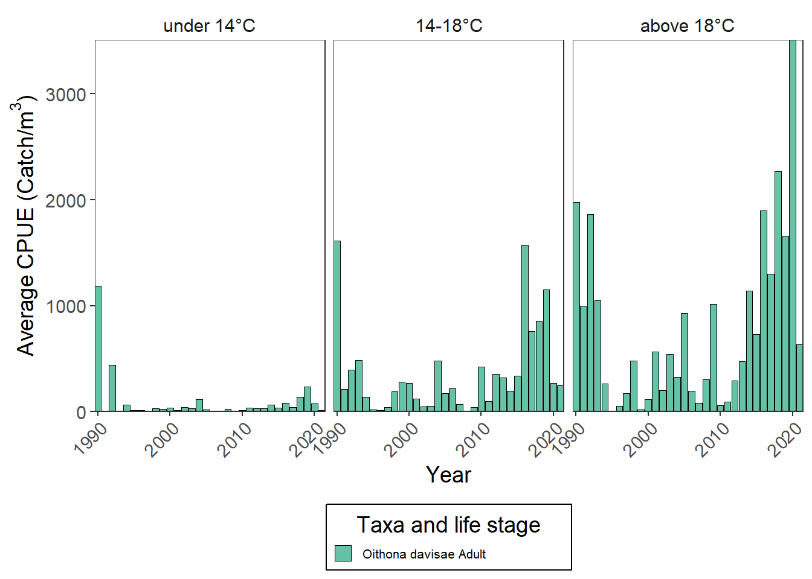
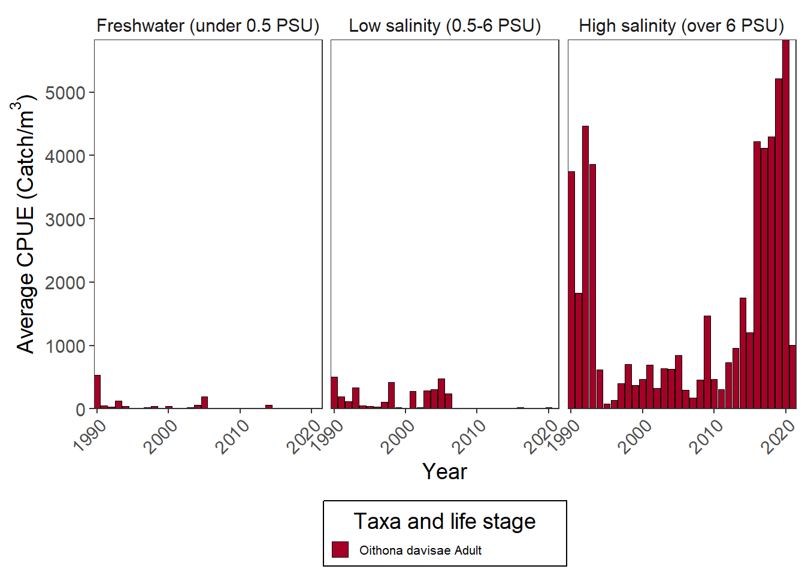

Oithona davisae culturing
Distribution

Smithsonian Environmental Research Center
O. davisae is native to Japan region, but has colonized other temparate marine waters.
Relative to TEMPERATURE gradient
Bashevkin et al. 2023
Relative to SALINITY gradient

Salinity range:
Lowest found: 0.1 PSU in the field (Sakaguchi et al. 2011)
Prefers salinities above 12 PSU (Ferrari and Orsi 1984), highest experimentally 40 PSU (Svetlichny and Hubareva 2014)
References
- Bashevkin, S. M., R. Hartman, M. Thomas, A. Barros, C. Burdi, A. Hennessy, T. Tempel, K. Kayfetz, K. Alstad, and C. Pien. 2023. Interagency Ecological Program: Zooplankton abundance in the Upper San Francisco Estuary from 1972-2021, an integration of 7 long-term monitoring programs. ver 4. Environmental Data Initiative.
- Lavens, P. & P. Sorgeloos (1999). Manual on the production and use of live food for aquaculture. FAO Fisheries Technical Paper No. 361. FAO, Rome, Italy. - Oithona davisae. Marine Invasions Research at the Smithsonian Environmental Research Center. - Santhosh L, Lyons PG, Rojas JC, Ciesielski TM, Beach S, Farnan JM, Arora V (2019). Characterising ICU-ward handoffs at three academic medical centres: process and perceptions. BMJ Qual Saf., Volume 8. - File:World map torrid.svg. (2020, January 25). Wikimedia Commons.
References continued
- Information:
- Atkinson, Angus (1998). Life cycle strategies of epipelagic copepods in the Southern Ocean. Journal of Marine Systems,Volume 15, Issues 1–4.
- Cornils, Astrid; Wend-Heckmann, Britta, & Christoph Held (2017). Global phylogeography of Oithona similis s.l. (Crustacea, Copepoda, Oithonidae). Molecular Phylogenetics and Evolution,Volume 107.
- Ferrari, F.D. & J.J. Orsi. (1984). Oithona davisae, new species, and Limnoithona sinensis (Burckhardt, 1912) (Copepoda: Oithonidae) from the Sacramento-San Joaquin Estuary, California. Journal of Crustacean Biology, Volume 4, Issue 1.
- Gallienne, Chris & Robins, D. (2001). Is Oithona the most important copepod in the world’s oceans? Journal of Plankton Research. Volume 23, Issue 10.
- Sakaguchii, Sakiko Orui; Ueda, Hiroshi; Ohtsuka, Susumu; Soh, Young Ho & Yoon, Ho Yoon (2011). Zoogeography of planktonic brackish-water calanoid copepods in western Japan with comparison with neighboring Korean fauna, Plankton & Benthos Research, Volume 6.
- Scripps Institute of Oceanography, Zooplankton Guide, https://sio-legacy.ucsd.edu/zooplanktonguide/species/oithona-similis
- Svetlichny, Leonid & Elena Hubareva (2014). Salinity tolerance of alien copepods Acartia tonsa and Oithona davisae in the Black Sea, Journal of Experimental Marine Biology and Ecology, Volume 461.
- Turner, Jefferson (2004). The importance of small planktonic copepods and their roles in pelagic marine food webs. Zool Stud. Zoological Studies, Volume 43.
- Uye, Shin-ichi & Sano, Kazuhiro (1995). Seasonal reproductive biology of the small cyclopoid copepod Oithona davisae in temperate eutrophic inlet. Marine Ecology Progress Series, Volume 118.
- Wang, Lianggen & Du, Feiyan & Wang, Xuehui & Li, Yafang & Ning, Jiajia. (2017). Distribution and role of the genus Oithona (Copepoda: Cyclopoida) in the South China Sea. Oceanologia, Volume 59.